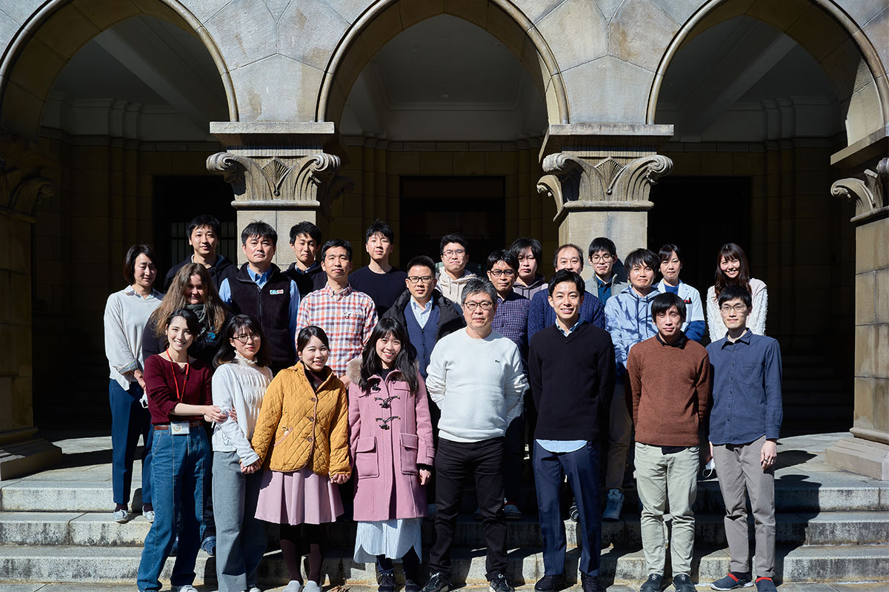

Message
教授からのメッセージ
研究とは、未踏の荒野をひとり進むことである。研究とは、誰もが気にしていないことに大きな価値を見出すことである。研究とは、気が狂っていると言われることを目指すものである。そして、研究を行う者とは、このような奇妙なことに大きな喜びを感じる人のことである。
臓器移植は、20世紀を代表する先進医療開発の大成功事例である。死の淵にある臓器不全患者にスッと手を差し伸べ、グイッとこの世に引き戻す素晴らしい治療効果を有している。しかしながら、ドナー臓器の決定的な不足という根源的な課題に直面しており、抜本的な解決策の提示が強く求められている。
当研究室は、ヒトiPS細胞を駆使して、「臓器」を創り出すことを目標としている。すなわち、異なった種類の様々な細胞を作製し、三次元的な立体構造を有する機能的な「臓器」を人為的に創出することを目指している。近い将来、治療用のヒト臓器を工業的に生産し、次々と医療現場に供給することができるようになれば素晴らしいと思いませんか？このような革新的な工場が、宇宙空間に存在しても良いと思いませんか？再生医療の開発が目指しているのは、アンシャンレジームAncien regimeの破壊による新たな未来の創造なのです。
夢なき者 理想無し
理想なき者 目標無し
目標なき者 実行無し
実行なき者 成果無し
成果なき者 喜び無し
喜びなき者 ここ去れ 詠み人不知
（江戸時代晩期、旧体制の破壊を目指し狂ったように生き、そして死した、ひとりの男が長州にいた。明治維新を創造した吉田松陰である。松陰先生の詩歌を勝手ながら改変させていただいた。）
谷口 英樹
Message from the Professor
Research is venturing alone into uncharted wilderness.
Research is finding great value in things that no one else pays attention to.
Research is pursuing what others may call crazy.
And those who conduct research are people who take great joy in such strange pursuits.
Organ transplantation is one of the great success stories in the development of advanced medicine during the twentieth century. It offers remarkable therapeutic benefits: reaching out to patients suffering from organ failure and pulling them back from the brink of death. Yet transplantation faces a fundamental challenge: the critical shortage of donor organs. A truly fundamental solution to this problem is urgently needed.
Our laboratory aims to create human organs by harnessing human induced pluripotent stem cells (iPS cells). In other words, we seek to generate a wide variety of cell types and assemble them into functional organs with complex three-dimensional structures.
Would it not be wonderful if, in the near future, therapeutic human organs could be produced on an industrial scale and supplied continuously to hospitals and clinics? And would it not be exciting if such a revolutionary factory could one day exist in outer space?
Regenerative medicine seeks to create a new future by dismantling the Ancien Régime.
Those without dreams have no ideals.
Those without ideals have no goals.
Those without goals take no action.
Those who take no action achieve no results.
Those who achieve no results know no joy.
Those who know no joy should leave this place.
Author unknown
(In the late Edo period, a man lived in Choshu who pursued the destruction of the old order with near-mad determination, and ultimately gave his life for that cause. His name was Yoshida Shoin 吉田松陰, whose vision helped bring about the Meiji Restoration. With the greatest respect, I have taken the liberty of adapting one of his poems.)
Hideki Taniguchi

News
ニュース
- 2026.12.01
[学会発表] 准教授の谷水直樹先生が、BMB2026 (第49回日本分子生物学会年会と第99回日本生化学会大会の合同大会) の、シンポジウム「自律神経による臓器機能および疾患発症・進展の制御」を企画・発表します
[Conference] Associate Professor Naoki Tanimizu will organize and present at the symposium "Regulation of Organ Function and Disease Development/Progression by Autonomic Nervous System Control" during BMB2026 (Joint conference of The 49th Annual Meeting of the Molecular Biology Society of Japan and the 99th Annual Meeting of the Japanese Biochemical Society).
- 2026.11.19
[学会発表] 博士課程の青嶋研治君と奥村歩君が、第33回肝細胞研究会第40回肝類洞壁細胞研究会学術集会合同大会 にて発表します
[Conference] PhD students Kenji Aoshima and Ayumu Okumura will give a presentation at the Joint Annual Meeting of the 33rd Japanese Society for the Research of Hepatic Cells and the 40th Hepatic Sinusoidal Research Japan
- 2026.10.13
【お知らせ】東大医科研の新Webマガジン "IMSUT neXus" が開設されました。
- 博士課程の青嶋研治君が第31回肝細胞研究会でポスター賞を受賞した際の写真「ポスター賞受賞！」が掲載されました。
- 博士課程の奥村歩君が撮影した顕微鏡写真「『μ』の世界」が掲載されました。
【Notice】Launch of New Web Magazine "IMSUT neXus".
- A photograph titled “Poster Award Winner!”, featuring PhD student Kenji Aoshima receiving the Poster Award at the 31st Annual Meeting of the Japanese Society for the Research of Hepatic Cells, has been published.
- A microscopy image titled “The World of μ”, captured by PhD student Ayumu Okumura, has also been featured.
- 2026.10.02
[講演] 准教授の谷水直樹先生がFrench National Institute of Health and Medical Research 日本officeのopening eventにて講演しました。
[Lecture] Associate Professor Naoki Tanimizu delivered a lecture at the opening event of the Japan Office of the French National Institute of Health and Medical Research (INSERM).
- 2026.09.24
[学会発表] テクニシャンが、第85回日本癌学会学術総会にて発表します
[Conference] A technician will give a presentation at the 85th Annual Meeting of the Japanese Cancer Association.
- 2026.09.16
[論文発表] 卒業生のXia YANGさんの論文が発表されました
[New paper] Xia YANG has published a new article.
Efficient Generation of Fetal Hepatic Stellate Cells from hiPSC
- 2026.08.19
[学会発表] 准教授の谷水直樹先生が、日本患者由来がんモデル学会 学術集会2026のシンポジウム「in vitroモデルを用いたがん研究の展開」にて発表しました。「ヒトiPS細胞を用いた癌微小環境を伴う膵癌オルガノイドの構築」
[Conference] Associate Professor Naoki Tanimizu presented at the symposium "Advances in Cancer Research Using In Vitro Models" at the Annual Meeting 2026 of the Japanese Association of Patient-Derived Cancer Models.
- 2026.06.27
博士課程の奥村歩君が、「採用期間中に優れた研究成果を上げ、さらなる進展が期待される者に対する、特別研究員－ＤＣの採用最終年次における研究奨励金特別手当」に採択されました
Ayumu Okumura (PhD candidate) has been selected to receive the Special Research Encouragement Allowance for JSPS Research Fellows (DC), awarded to fellows in their final year who have achieved outstanding research accomplishments during their fellowship and are expected to make further significant progress.
- 2026.07.09
[講演] 准教授の谷水直樹先生が、ポストISS勉強会 第3回 装置開発分科会 にて講演します
[Lecture] Associate Professor Naoki Tanimizu to Speak at the 3rd Instrument Development Subcommittee Meeting of the Post-ISS Study Group
- 2026.06.10
[論文発表] 博士課程の山邊 聡一郎さんの論文が発表されました
[New paper] YAMABE Soichiro has published a new article.
Oxygenated Perfusion Enhances Hepatocyte Function in Human iPSC-liver Tissue
- 2026.06.04
[学会] 准教授の谷水直樹先生が、日本薬剤学会第４１回年会の学術シンポジウム「オルガノイド研究が拓く薬物動態・薬効/安全性予測の未来像」にて発表します
[Conference] Associate Professor Naoki Tanimizu will present at The 41st Annual Meeting of The Academy of Pharmaceutical Science and Technology, Japan (APSTJ) in the symposium titled "The Future of Pharmacokinetic/Pharmacodynamic/Safety Predictions Opened by Organoid Research."
- 2026.05.30
[講演] 教授の谷口英樹先生が千葉県保険医協会で講演をします
[Lecture] Prof. Hideki Taniguchi will be giving a lecture at the Chiba Prefecture Association of Medical Practitioners.
- 2026.05.18
[講演] 教授の谷口英樹先生が、JACI(新化学技術推進協会）で講演をします
[Lecture] Prof. Hideki Taniguchi will give a lecture at the Japan Association for Chemical Innovation (JACI)
- 2026.03.28
[入試情報] 博士課程の奥村歩くんが、メディカル情報生命専攻の "大学院生・受験生・OB/OG交流会" (2026年3月28日（土） 13:00-15:00 @白金台キャンパス)にて講演します
Ayumu Okumura, a PhD candidate, will give a presentation at the "Exchange meeting for Graduate Students, Candidates and OB/OGs" hosted by the Department of Computational Biology and Medical Science (Saturday, 28 March 2026, 13:00-15:00 @Shirokanedai Campus). Please note that this event will be held in Japanese. To participate, please visit the Japanese website and register.
- 2026.03.19
[学会発表] 准教授の谷水直樹先生が第25回日本再生医療学会総会@神戸にて、シンポジウム「肝疾患研究の新展開：in vitroおよびin vivoモデルを用いた挑戦」を企画し、発表します。
客員研究員の久世祥己さんも発表します
[Conference] Associate Professor Naoki Tanimizu will organise and present at the symposium "New Developments in Liver Disease Research: Challenges Using in vitro and in vivo Models" at The 25th Congress of the Japanese Society for Regenerative Medicine in Kobe. Visiting Researcher Yoshiki Kuse will also present.
- 2026.02.20
[学会発表] 教授の谷口英樹先生が第53回日本膵・膵島移植学会学術集会にて、特別講演を行いました
"ヒトiPS細胞を駆使した臓器創出への挑戦"
[Conference] Professor Hideki Taniguchi delivered a special lecture at The 53rd Annual Congress of Japanese Pancreas and Islet Transplantation Association
"The Challenge of Organ Creation Using Human iPS Cells"
- 2026.02.10
[受賞] 博士課程の奥村歩くんが、令和7年度メディカル情報生命専攻ERA (Excellent Research Award) 賞 を受賞しました。
[Award] Ayumu OKUMURA, a PhD student, won the 2025 ERA "Excellent Research Award" from the Department of Computational Biology and Medical Sciences.
- 2026.01.13
博士課程の鄧 嘯山くんと奥村歩くんの研究が、メディカル情報生命専攻の "博士優秀論文" に選出されました。
The doctoral dissertations of Xiao-Shan Deng and Ayumu Okumura have been recognized with the 'Outstanding Doctoral Thesis Award' in the Department of Computational Biology and Medical Sciences.
- 2025.12.20
[学会発表] 博士課程の青嶋研治君と奥村歩君が、第32回日本肝臓医生物学研究会にて発表しました
[Conference] PhD students Kenji Aoshima and Ayumu Okumura presented at the 32nd "Prometheus meeting".
- 2025.12.12
[研究助成金] 准教授の谷水直樹先生が、上原生命科学財団の研究助成金に採択されました。「膵癌微小環境模倣と情報科学の融合による創薬革新」
[Research Grant] Associate Professor Naoki Tanimizu has been awarded a research grant from "the Uehara Memorial Foundation" for his research project, "Innovating Drug Discovery through the Integration of Pancreatic Cancer Microenvironment Modeling and Information Science."
- 2025.11.24
[一般向けイベント]教授の谷口英樹先生が、第76回駒場祭で講演します
11/24 (月・休) 21 COMCEE West 地下1階 レクチャーホール iPS細胞が拓く再生医療の最前線
YouTube配信 【第76回駒場祭】iPS細胞が拓く再生医療の最前線
- 2025.10.24
[論文発表]卒業生のLI Yangさんの論文が発表されました
[New paper] LI Yang has published a new article.
Protocol for generating liver organoids containing Kupffer cells using human iPSCs
- 2025.10.11
[一般向けイベント] 教授の谷口英樹先生が、日本医療研究開発機構 AMED が主催する一般向けオンラインイベント 肝炎等克服実用化研究事業公開報告会 にて講演します
[Public event] Professor Hideki Taniguchi will give a lecture at the Hepatitis Overcoming Practical Research Project Public Report Meeting, an online event open to the general public, hosted by the Japan Agency for Medical Research and Development (AMED).
「iPS細胞は肝臓の病気を治せるのか？～ヒトiPS細胞を駆使した新規治療法の開発～」
参加登録ページ
- 2025.10.06
客員研究員の久世 祥己さん（岐阜薬科大）が独立して研究室を開設しました
Yoshiki KUSE begins independent research as principal investigator at Gifu Pharmaceutical University.
生体再現学研究室（岐阜薬科大学 サテライト研究室）
- 2025.09.29
[論文発表] 博士課程のYANG Xiaさんの論文が発表されました
[New paper] Yang Xia (PhD student) has published a new article.
Human pluripotent stem cell-derived fetal hepatic stellate cells promote vascularization and maturation in liver organoids